OsiriX Security Guide
Welcome to the OsiriX Security Guide. This Guide was brought to you by the OsiriX development Team and is frequently updated.
This document will guide you step by step in creating SSL Certificates and setting up the OsiriX HTTPS Web Server and DICOM TLS Listener.
OsiriX Secure Web Server Setup
Requirement: Make sure you have a valid certificate in your Keychain (see Creating a Self-Signed Certificate or Requesting a Certificate from a Certification Authority)
- Open OsiriX.
- Open the Preferences (in the OsiriX Menu).
- Select the Web Server Preferences:
- Activate the Web Server: 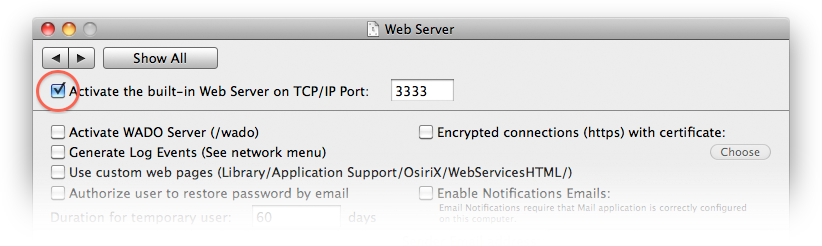
- Activate the encryption:
- Click Choose to select the certificate to use for encryption: 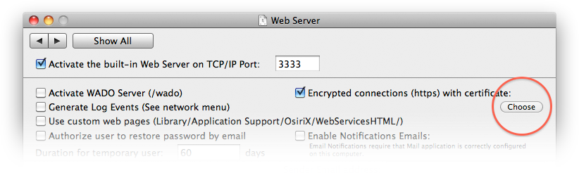
- The list of available certificates will appear. Select the one you want to use, and click the Choose button:
- The chosen certificate will be displayed in the Web Server preferences: 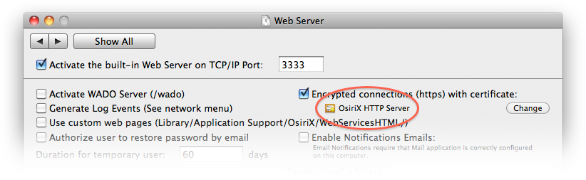
- [DO NOT SKIP THIS STEP] Test the OsiriX Web Server at:
or:
When you try to load this page, you may have 1 or 2 warnings:- Safari can ask your approval for connecting to a site using an invalid certificate.
This occurs if you created a self-signed certificate (as described in Creating a Self-Signed Certificate).
Here, you can either click Continue (for a one time approval) or click Show Certificate to modify the trust settings (see Changing the Trust Settings of a Certificate).
Note: Your users will have the same kind of warning when trying to connect to your OsiriX Web Server. This is the down-side of creating self-signed certificates...
- OsiriX asks your permission to use the private key associated to your certificate.
You have to click the Always Allow button:


- Safari can ask your approval for connecting to a site using an invalid certificate.
This occurs if you created a self-signed certificate (as described in Creating a Self-Signed Certificate).
- The OsiriX Web Server is now completely secure and can be visited at:
https://yourIPAddress:3333/
or:
https://yourHostname:3333/


OsiriX TLS DICOM Listener Setup
Requirement: Make sure you have a valid certificate in your Keychain (see Creating a Self-Signed Certificate or Requesting a Certificate from a Certification Authority)
- Open OsiriX.
- Open the Preferences (in the OsiriX Menu).
- Select the Listener Preferences:
- The last option of this group of settings, you will find the DICOM TLS Listener. Click on the TLS Settings button:
- In the TLS Settings, click on the Activate DICOM TLS Listener check box, and choose an AETitle and a Port number (it must be different from the default DICOM Listener port). Then click on the Choose button to select the certificate to use for TLS communications:
- The list of available certificates will appear. Select the one you want to use, and click the Choose button: 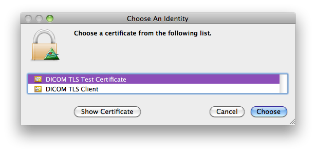
- Here is an example of TLS Settings:
- The chosen AETitle and Port will be displayed on the Listener Preferences window: 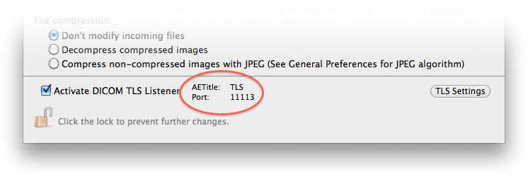
- You can now receive encrypted DICOM communications on the chosen Port.


Creating a Self-Signed Certificate
The easiest and quickest way to create a certificate is to make a self-signed certificate using the Certificate Assistant.
The problem with self-signed certificates is that they will not be trusted by default on your users' computers (they may receive security warnings).
But it could be useful for testing purpose or internal use.
To create a self-signed certificate:

- Open Keychain Access.app located in /Applications/Utilities.
- Choose Certificate Assistant > Create a Certificate... from the Keychain Access Menu, as shown in the following image:
- Choose a name for your certificate (it can be anything) and make sure that you choose SSL Server for the Certificate Type: 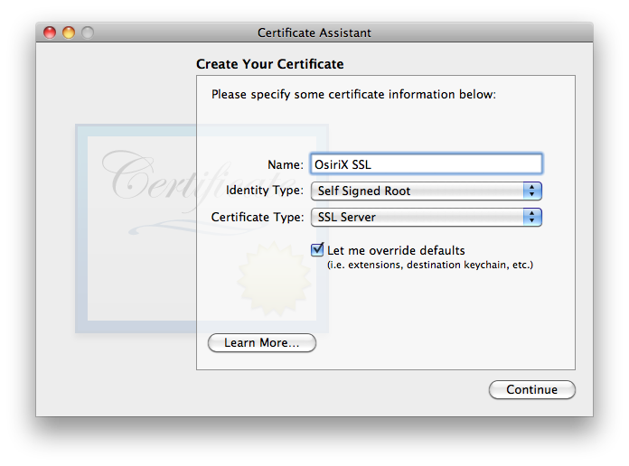
- Confirm that you want to create a self-signed certificate by clicking the Continue button:
- Choose a Serial Number and a Validity Period:
- Enter the required informations, for example: 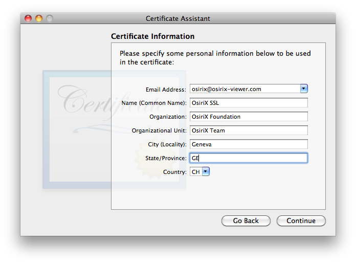
- Choose the Key Size and the Algorithm. Click Learn Mode... for informations about theses options. 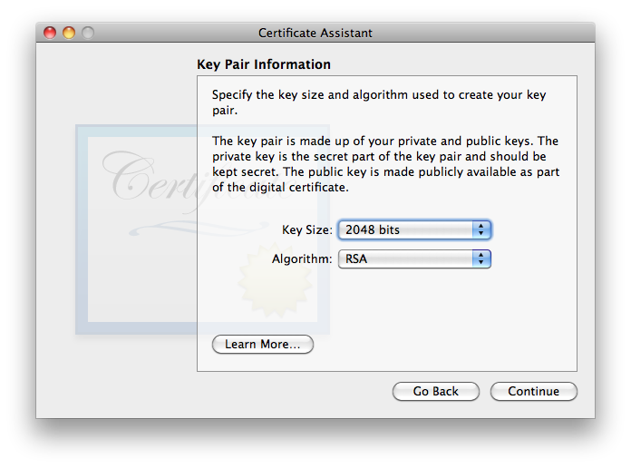
- Select all capabilities for the Key Usage Extension: 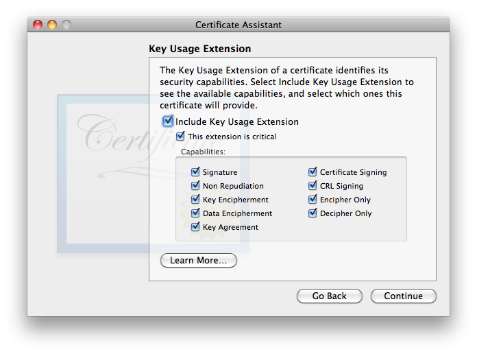
- Select only the specific Extended Key Usage Extension, which is SSL Server Authentication: 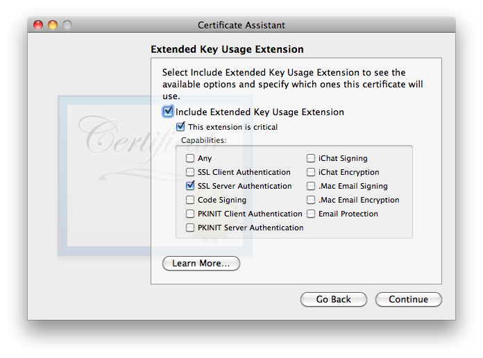
- Don't include the Basic Constrains Extension:
- Don't include the Subject Alternate Name Extension:
- Select the Login Keychain to store the certificate:
- The Certificate is now created:


Requesting a Certificate from a Certification Authority
- Open Keychain Access.app located in /Applications/Utilities.
- Choose Certificate Assistant > Request a Certificate from a Certificate Authority... from the Keychain Access Menu, as shown in the following image:
- In the Certificate Information window, enter your e-mail address and the desired name for the requested certificate. Don't fill the CA Email Address field and choose Save to disk:
- Choose a name and location for the request: 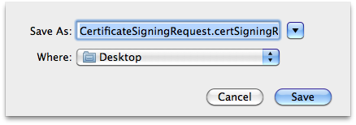
- Set the key size:
- When the request has been created, click Show In Finder... and open it with TextEdit.app.
- The content of the certificate request should look like this: 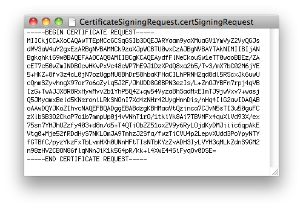
- Copy the content of the certificate request and submit it to your favorite Certification Authority (CA). The usual suspects are:


Real-case example
This example shows how a valid SSL certificate is created for a server in the University Hospital of Geneva.
- A certificate request is created as described before.
- The certificate request is submitted to Switch, a service provider for Swiss Universities. 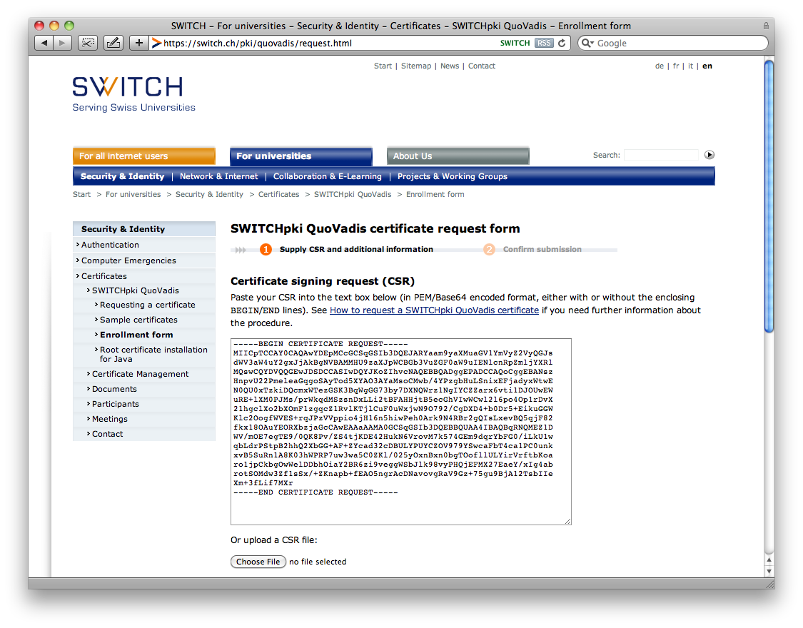
- After approval by the hospital's registration authority person, the certificate is downloaded and added to the server's Keychain.
- At this point the certificate is still not valid because the intermediate CA certificate is unknown:
- The intermediate CA certificate has to be downloaded from the intermediate CA web site (in this case QuoVadis).
- The intermediate CA certificate is added to the Keychain of the server:
- The server's certificate is now recognized as valid: 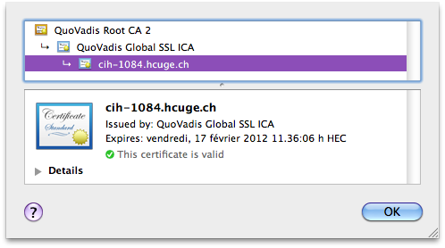
- When using the certificate with an OsiriX Web Server, the intermediate CA certificate will be automatically transmitted to the clients systems.
Thus clients should see the certificate as valid.
- A client using Safari on Mac OS X:
- A client using Firefox on Mac OS X: 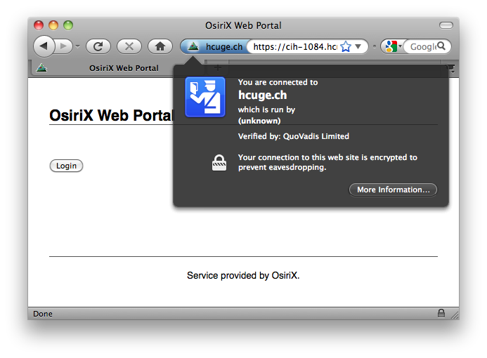
- A client using Chrome on Mac OS X:
- A client using Internet Explorer on Windows XP:


- If the intermediate CA certificate is not installed or if the certificate is not valid, the clients will received warning messages such as:
- Safari on Mac OS X:
- Firefox on Mac OS X:
- Chrome on Mac OS X: 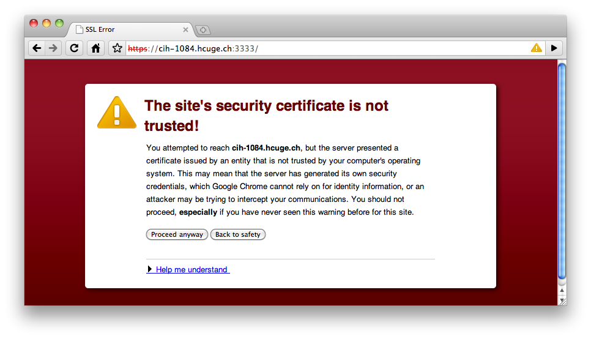
- Internet Explorer on Windows XP: 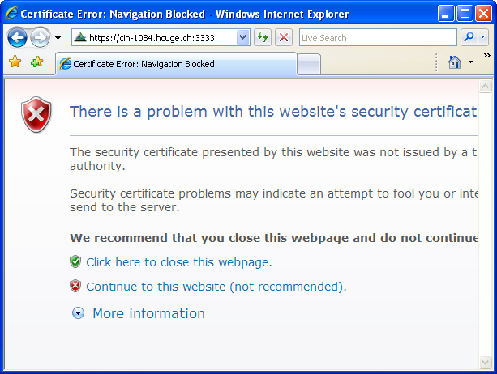


Changing the Trust Settings of a Certificate
- Open Keychain Access.app located in /Applications/Utilities.
- Select the My Certificates Category and double-click on your certificate.
- This will open a window displaying the certificate's infos. Click on the disclosure button near Trust:
- Change the trust settings to Always Trust and close the window.
- Authenticate to validate your changes.
- Your certificate is now trusted for the current user.


More Help?
If this guide does not answer all your questions, please try our mailing-list:
http://tech.groups.yahoo.com/group/osirix/
Your can directly subscribe through here: